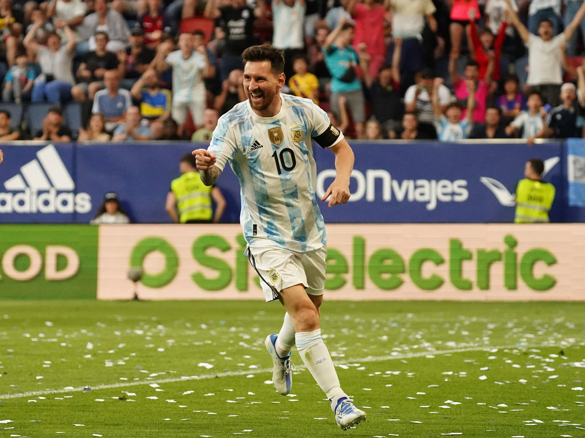

Lionel Messi
Lionel Messi, el jugador con mas balones de oro de la historia, ganador de casi todo lo que jugo, ustedes se preguntaran si gano "casi" todo, ¿que es lo que le falta? Exactamente, la copa del mundo
"La pulga", que viene de ganar la Copa America con la seleccion argentina, juega su quinto y probablemente ultimo mundial, quizas la ultima chance para ganar este preciado torneo
Para muchos el mejor jugador de la historia, para otros no lo es debido a que no es aun campeon del mundo. Esta es la oportunidad que tiene "Leo" para callar bocas y consagrarse como el mejor de la historia, el G.O.A.T, el numero 1 indiscutido. Todos los argentinos deseamos que asi sea.